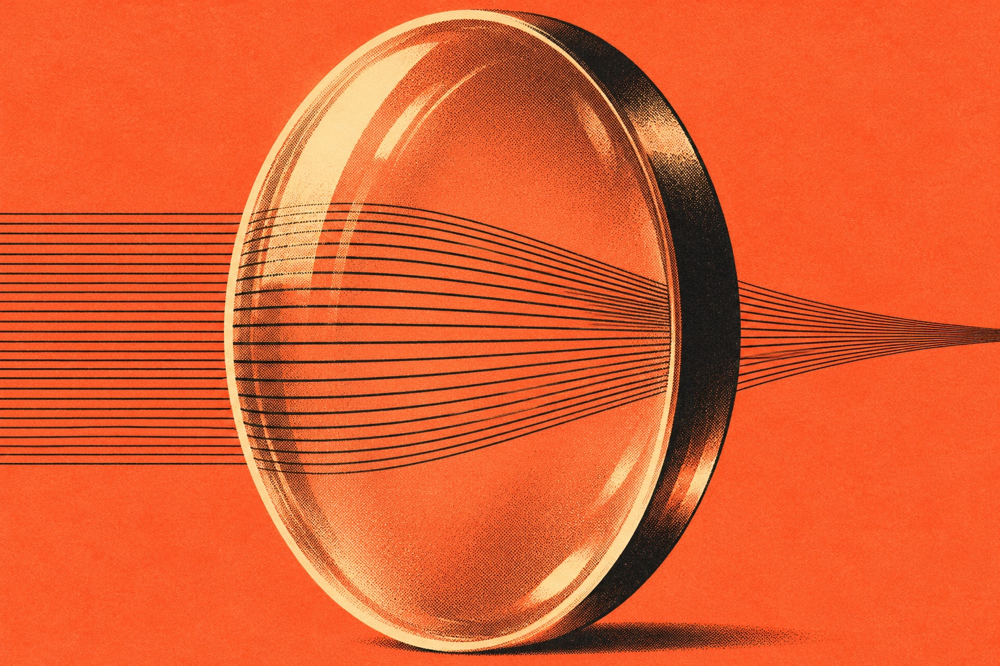

Machine perception
How machines learn to see.
We study how vision models make sense of light, shape and depth, and where their picture of the world breaks down.

Machine perception
We study how vision models make sense of light, shape and depth, and where their picture of the world breaks down.
